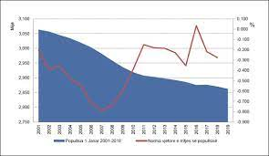

Popullsia
Shqipëria ka 2,893,005 banorë. 46% e shqiptarëve jetojnë nëpër fshatra. Mbas kohës së diktaturës ndodhi një ndryshim demografik. Me qindra shqiptarë kanë emigruar (të ligjshëm ose të paligjshëm) në Itali, Greqi, BE edhe në vendet e Amerikës Veriore. Në 2004 shteti shqiptar shpalli një milion emigrantë në më pak se 15 vjet. Pavarësisht se njerëzit kanë emigruar, rritja e popullsisë në qytete si Tirana dhe Durrësi nuk u ndalua. Tirana, në vitin 1990 kishte 250,000 banorë edhe 20 vjet me vonë ka më shumë se 600,000 banorë, kjo është një rritje prej 140%. Në atë kohë njerëzit kanë lënë vendin dhe kanë shkuar nëpër vende të huaja ose njerëzit kanë lënë fshatin dhe kanë shkuar nëpër qytete.
